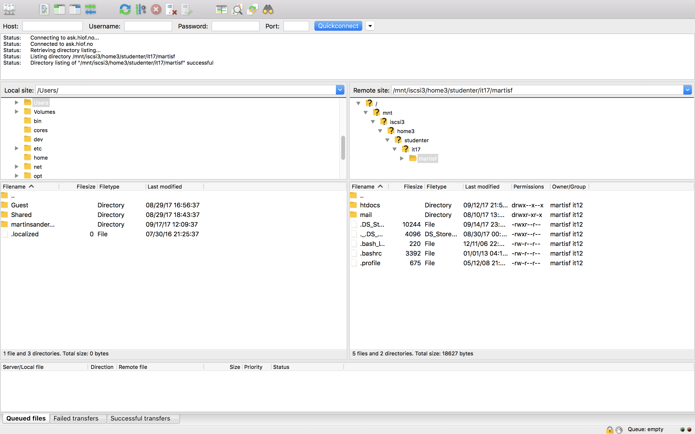

Kort sagt
 FTP er kort for "File Transmission Protocol", og er en metode for å overføre data mellom to datamaskiner. Overføringene skjer mellom en FTP-klient og en FTP-server. Dette lar en bruker laste opp filer til en webserver slik at de blir tilgjengelig på internett.
FileZilla
Filezilla er en ftp klient som er gratis og enkel å bruke. Til høyre er et screenshot av meg koblet opp mot ask serveren. Øverst på bildet ser man adressen til serveren jeg er koblet opp mot som er ask.hiof.no. Sftp betyr at serveren bruker en mer sikker versjon av ftp. Den venstre boksen viser filene på pcen min, imens den høyre siden viser filene på serveren. Begge bruker et hierarkisk system. FileZilla gjør at man lett kan overføre filer mellom pcen og serveren.